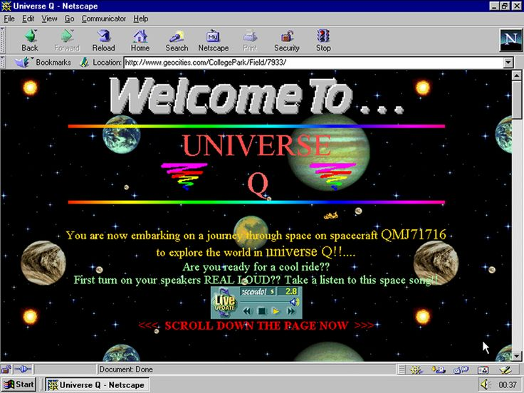

Web 1.0 refers to the early stage of the World Wide Web (developed by Tim Berners-Lee in 1989), which was primarily focused on static content and limited user interaction. It was characterized by simple HTML pages, basic hyperlinks, and a lack of dynamic features.
During the Web 1.0 era, websites were mostly informational and read-only, with users acting as passive consumers of content. There were no social media platforms, user-generated content, or interactive features that we see in later versions of the web.
Web 1.0 laid the foundation for the development of the internet, but it was limited in terms of functionality and user engagement.

This webpage is an example of a web 1.0 site.